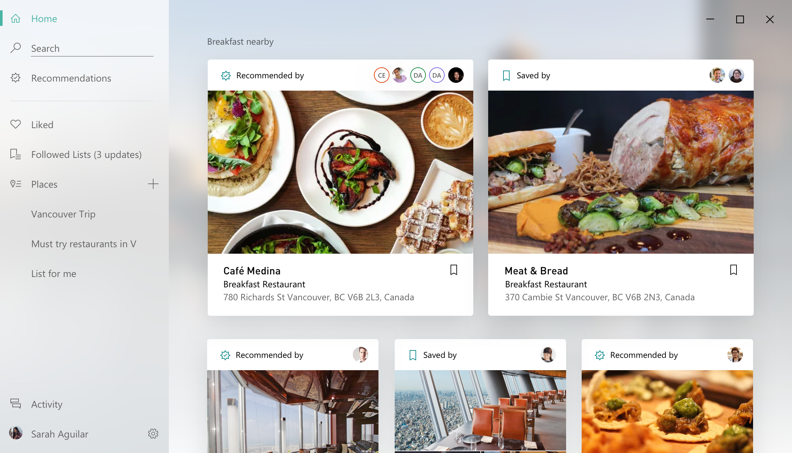
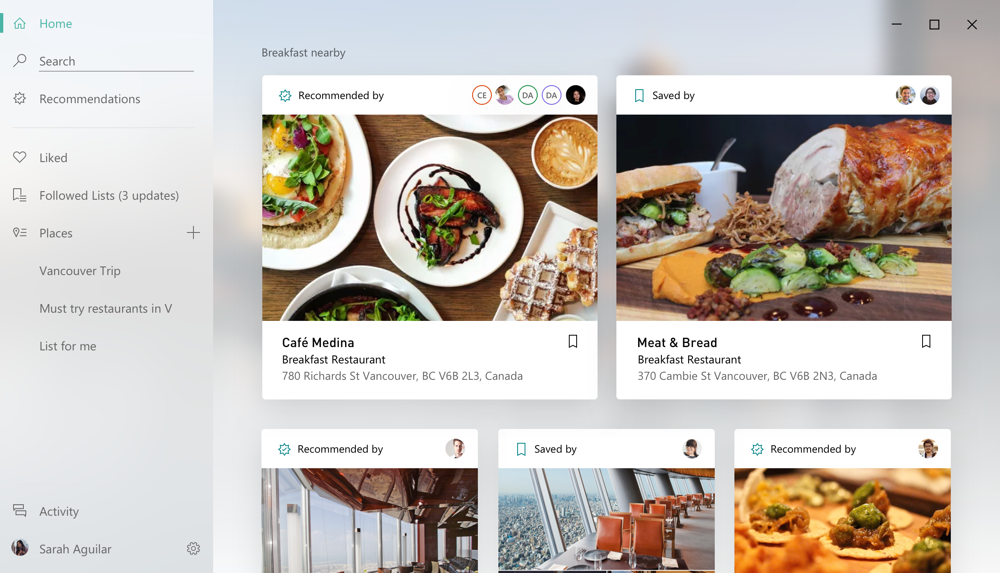

Frank Chen | 陈量

Hello, my name is Frank Chen. I am a seasoned designer, product manager, design strategist with 10+ years of expereince working at the forefront of technolog from mobile devices back in 2008 to HoloLens in 2017. Technology is a double edged sword and I believe that it is our responsibility to shape it so that it helps the individuals and the collective human race to grow and thrive. My hero is Bret Victor. You can find a copy of my resume here.
Projects
Windows Focus Session

Interactive Guided Formulation
New location Experience on Windows
The Windows Maps app was originally built for Windows Phone. The desktop app was built later on to provide a connected experience for users. Then Microsoft devested its phone business in 2017. The Windows Maps app, along with a few other Windows applications were moved to the Windows NEXT org in 2018.
The desktop version of the Maps app's engagement stayed relatively flat over the past year given the proliferation of the smart phones and the use cases of a mapping application.
The team is tasked to reimagine how to help Windows users to have a better location experience. The new location experience focuses on bring people and friends together by integrating discovery and collective planning features in Windows Maps app and by creating a new standalone iOS and Android app.
 


I started to learn Framer when I worked on this project and below are some Framer prototypes I made to explore the mobile concept.
Windows Maps App
Microsoft Fluent Design Language is a new design system the company is adopting. Windows Maps app was one of the first party apps that worked closely with the Flent team to stress tested, evolved, and co-defined the system. As the Senior UX Designer on the team, I helped to drive the direction of the new Fluent Maps exploration.


I explored the idea of allowing more business driven customization of the place card which is something Google Maps does not offer. The hypothesis is that offering the businesses to customize their own place card is a value that will help to attract more businesses to add their information to Windows Maps. This then would create a virtuous circle that would eventually attract more end users.

One of the scenarios the user often go through is to look for a few places and then compare them. There was no easy way to do that. In our exploration, we thought about the idea of bing able to pull place cards out of the app window.


Collections is a feature the team came up with that works with the new location experience we were building. The idea is that the users can co-create and share the Collections both in the Maps app and in the new location app.


Spatial UI (HoloLens)
HoloLens and Universal Windows Apps are two separate platforms Microsoft owns. They are separate from each other. Apps developed for the Windows platform can work in HoloLens but the interaction is suboptimal. This is an explorative effort with the goal to improve the experience of Windows apps in HoloLens. This video is demonstrated at the 2018 Microsoft Build conference.
I led the UX exploration and did the interaction exploration in 3DS Max and worked with a motion designer to produce the final video. I also drove the team's patent effort and at the end of the project, we filed 3 patents to protect the IP.

I started with the desktop Mail app. Broken it down into different functioning zones and explored how interaction with each functioning zone can be improved in VR/AR space. For example, the experience with the content commanding requires the user to use the 6-DOF controller to aim at very small button far away from where she stands. It makes the interaction error prone and time consuming.

Here is another motion study showing experience from first person POV. The content is summoned to a 6-DOF controller to simulate "holding" the content naturally.
Generative design concept
This is a side project in which I experimented with using generative design to explore brand concepts. The goal is to convey the feeling of unique identity and connection. The tool I used was Processing. Below are some examples of the type of visual patterns that can be generated using the program.

By reducing the connection length, the point size, and increasing the number of points on the sphere, the underlying sphere shape becomes more obvious in this pattern (below).


In this example (below), with the number of points reduced and the connection length increased, the patterns looks very different from the ones above.

Here is a video recording of the interactive program that show cases the different visuals can be generated by adjusting the parameters.